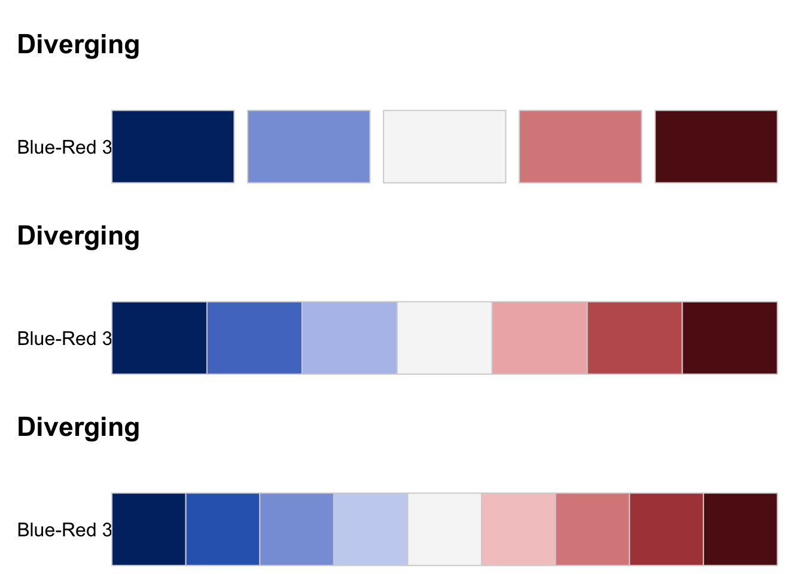
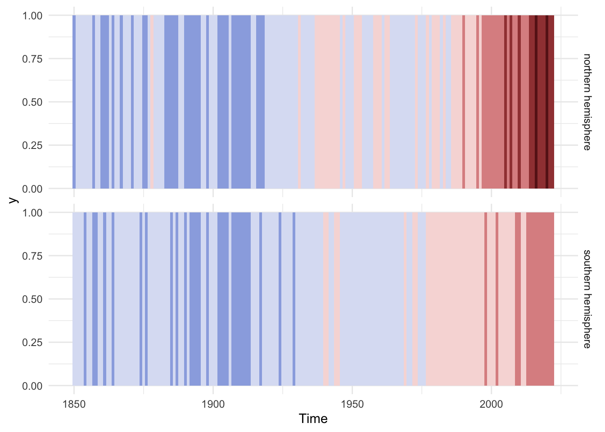
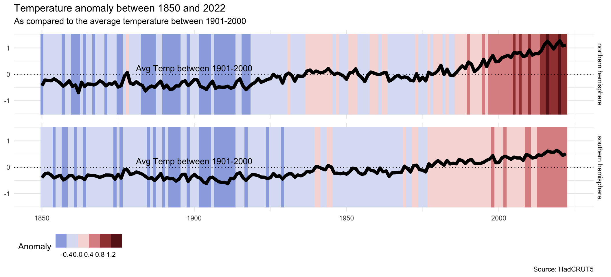

Climate Stripes
The target Visualisation

From https://showyourstripes.info/s/globe
These ‘warming stripe’ graphics are visual representations of the change in temperature as measured in each country over the past 100+ years. Each stripe or bar represents the temperature in that country averaged over a year. For most countries, the stripes start in the year 1901 and finish in 2021. For the ocean basins and for several countries with longer datasets available the stripes start in the 19th century instead. For two cities (Stockholm and Vienna), the data starts in the 18th century.
Some variations
The visualisation is very popular, and there have been a number of different variations1
1 Ed Hawkins has created a facebook group to share that https://www.facebook.com/ed.hawkins.climate/ and
Deconstructing the visualisation
Understanding the underlying data
We are using HadCRUT5 dataset, provided by the Met Office Hadley Centre and the Climatic Research Unit at the University of East Anglia.
From the official website:
HadCRUT5 is a gridded dataset of global historical surface temperature anomalies relative to a 1961-1990 reference period. Data are available for each month from January 1850 onwards, on a 5 degree grid and as global and regional average time series. […]
Brief description of the data
The gridded data are a blend of the CRUTEM5 land-surface air temperature dataset and the HadSST sea-surface temperature (SST) dataset. The dataset is presented in two ways. First, as with the previous version of the data set, HadCRUT4, data are averaged onto a regular grid with no value provided in grid cells containing no observations. Second, a statistical method has been used to extend coverage in data sparse areas and provide a more globally complete data set.
Both forms of the dataset are presented as an ensemble of 200 dataset realisations that sample the distribution of uncertainty. For the non-infilled data set, the ensemble represents uncertainties in methods used to account for changes in SST measurement practices, homogenisation of land station records and the potential impacts of urbanisation. The ensemble generated from the statistical analysis includes these uncertainties as well as uncertainty arising from measurement error, under-sampling at a grid cell level and uncertainty in the statistical reconstruction.
Let’s explore the data, then:
southernHemisphere <- read.csv("data/raw/HadCRUT.5.0.1.0.analysis.summary_series.southern_hemisphere.annual.csv")
knitr::kable(head(southernHemisphere))| Time | Anomaly..deg.C. | Lower.confidence.limit..2.5.. | Upper.confidence.limit..97.5.. |
|---|---|---|---|
| 1850 | -0.3995265 | -0.6344203 | -0.1646327 |
| 1851 | -0.2474506 | -0.4933191 | -0.0015820 |
| 1852 | -0.2230961 | -0.4598785 | 0.0136863 |
| 1853 | -0.2953167 | -0.4936726 | -0.0969608 |
| 1854 | -0.4083520 | -0.5807376 | -0.2359663 |
| 1855 | -0.3482592 | -0.5179241 | -0.1785943 |
For the stripes only one column is needed: Anomaly..deg.C. , which is calculated as follows2:
2 For a detailed explanations of the methods used to calculate the variable, refer to Morice, C.P., J.J. Kennedy, N.A. Rayner, J.P. Winn, E. Hogan, R.E. Killick, R.J.H. Dunn, T.J. Osborn, P.D. Jones and I.R. Simpson (in press) An updated assessment of near-surface temperature change from 1850: the HadCRUT5 dataset. Journal of Geophysical Research (Atmospheres) doi:10.1029/2019JD032361 (supporting information).
“For each country, the average temperature in 1971-2000 is set as the boundary between blue and red colours, and the colour scale varies from +/- 2.6 standard deviations of the annual average temperatures between 1901-2000. For the global average only, the UK Met Office HadCRUT5.0 dataset is used and the colour scale goes from -0.75°C to +0.75°C. The stripes are usually shown for the period 1901-2021 but this can be longer or slightly shorter depending on the location and whether the data is available & considered robust.”
Let’s prepare a simpler dataframe and explore the variables that we will be using:
df_south <- southernHemisphere %>%
select(Time, Anomaly..deg.C.) %>%
rename(Anomaly = Anomaly..deg.C.)
summary(df_south) Time Anomaly
Min. :1850 Min. :-0.6253
1st Qu.:1893 1st Qu.:-0.3719
Median :1936 Median :-0.2314
Mean :1936 Mean :-0.1299
3rd Qu.:1979 3rd Qu.: 0.1256
Max. :2022 Max. : 0.6384 And as seen above, Anomaly ranges from -0.6252645 to 0.6384018.
Visualising the data
The first step to understand the visualisation is to visualise the dataset:
plot(df_south$Time, df_south$Anomaly)ggplot(df_south, aes(x = Time, y = Anomaly)) +
geom_point()Or in a barplot:
barplot(df_south$Anomaly)ggplot(df_south, aes(x = Time, y = Anomaly)) +
geom_bar(stat="identity")Adding colour
We could add colours to those visualisations, but we need to understand how colours work.
First, define our color palette. We will be using {colorspace} package3, which provides a series of colour palettes, each of them aimed at different use cases:
3 Another alternative could be using RColorBrewer, which implements colorbrewer palettes, which are used a lot in maps: https://colorbrewer2.org
- Diverging
- Sequential
- Diverging
library(colorspace)
hcl_palettes(plot = TRUE, type = "Qualitative")
hcl_palettes(plot = TRUE, type = "Sequential")
hcl_palettes(plot = TRUE, type = "Diverging")
It seems that the colour palette that the original stripe is using is a diverging palette, and most specifically a Blue-Red variation, probably closer to Blue-Red 3
Defining colour breaks
In turn, each palette can have different number of colour breaks:
par(mfrow = c(3, 1))
hcl_palettes(plot = TRUE, type = "Diverging", palette = "Blue-Red 3")
hcl_palettes(plot = TRUE, type = "Diverging", palette = "Blue-Red 3", n = 7)
hcl_palettes(plot = TRUE, type = "Diverging", palette = "Blue-Red 3", n = 9)
Now we
Putting it together
# Save common parameters into variables.
color_palette <- "Blue-Red 3"
breaks <- 7# Create our color palette.
myColours <- diverge_hcl(n = breaks, palette = color_palette)
# and I want the 'right' colour for each data point
# i.e. 'myDataInColours'
# how much data I want in each colour bin... (i.e. quantiles or something else)
myDensities <- seq(0, 1, l = breaks + 1)
# find the values for the bin containing each denisty
myDataBins <- quantile( x = df_south$Anomaly, probs = myDensities )
# find which bin the data are in
myColourIndices <- findInterval(x=df_south$Anomaly, vec = myDataBins, all.inside = T )
# ... then I will have my Data In Colours!
myDataInColours <- myColours[ myColourIndices ]
# Plot the result
plot(df_south$Time, df_south$Anomaly, pch=19, cex=2, col=myDataInColours )
ggplot(df_south, aes(x = Time, y = Anomaly, color = Anomaly)) +
geom_point() +
scale_color_binned_diverging(palette = color_palette, n.breaks = breaks) #<Or in a barplot:
Code
# Create our color palette.
myColours <- diverge_hcl(n = breaks, palette = color_palette)
# and I want the 'right' colour for each data point
# i.e. 'myDataInColours'
# how much data I want in each colour bin... (i.e. quantiles or something else)
myDensities <- seq(0, 1, l = breaks + 1)
# find the values for the bin containing each denisty
myDataBins <- quantile( x = df_south$Anomaly, probs = myDensities )
# find which bin the data are in
myColourIndices <- findInterval(x=df_south$Anomaly, vec = myDataBins, all.inside = T )
# ... then I will have my Data In Colours!
myDataInColours <- myColours[ myColourIndices ]
# Plot the result
barplot(df_south$Anomaly, col=myDataInColours, border = NA)
Code
ggplot(df_south, aes(x = Time, y = Anomaly, fill = Anomaly)) +
geom_bar(stat="identity") +
scale_fill_binned_diverging(palette = color_palette, n.breaks = breaks)Replicating the original
df_south$height = 1
barplot(df_south$height, col=myDataInColours, border = NA, space = 0,
ann=FALSE, yaxt='n')
ggplot(df_south, aes(x = Time, y = 1, fill = Anomaly)) +
geom_bar(stat="identity", width = 1) +
scale_fill_binned_diverging(palette = color_palette, n.breaks = breaks) +
theme_void() +
theme(legend.position="none") +
labs(title = "test") 
Tweaking the original
What would happen if we changed the colour scale? And if we changed the binning method?
Extending the original
Adding overlays and annotations
I find the original to be so simple that it is difficult to interpret, or lacks a clear message.
p <- ggplot(df_south, aes(x = Time)) +
geom_bar(aes( y = 1, fill = Anomaly), stat="identity", width = 1) +
geom_bar(aes( y = -1, fill = Anomaly), stat="identity", width = 1) +
scale_fill_binned_diverging(palette = color_palette, n.breaks = breaks) +
geom_hline(yintercept = 0, linetype='dotted', col = "black") +
annotate("text", x = 1855, y = 0, label = "Avg Temp between 1901-2000",
col = "#333333",
vjust = -0.5,
hjust = 0,
fontface = "bold") +
geom_line(aes(y = Anomaly), linewidth = 1.1, col = "white") +
# guides(y = "none") +
theme_minimal() +
theme(legend.position="top",
legend.direction="horizontal",
legend.justification = c(0,0)) +
labs(title = paste("Temperature anomaly in the Southern Emisphere between",
min(df_south$Time), "and", max(df_south$Time)),
subtitle = "As compared to the average temperature between 1901-2000",
caption = "Source: HadCRUT5",
x = NULL, y = NULL)
pComparing data from different areas
df_south <- read.csv("data/raw/HadCRUT.5.0.1.0.analysis.summary_series.southern_hemisphere.annual.csv") %>%
select(Time, Anomaly..deg.C.) %>%
rename(Anomaly = Anomaly..deg.C.) %>%
mutate(location = "southern hemisphere")
df_north <- read.csv("data/raw/HadCRUT.5.0.1.0.analysis.summary_series.northern_hemisphere.annual.csv") %>%
select(Time, Anomaly..deg.C.) %>%
rename(Anomaly = Anomaly..deg.C.) %>%
mutate(location = "northern hemisphere")
# Joining together
df <- df_south %>%
bind_rows(df_north)ggplot(df, aes(x = Time, y = 1, fill = Anomaly)) +
geom_bar(stat="identity", width = 1) +
scale_fill_binned_diverging(palette = color_palette, n.breaks = breaks) +
theme_minimal() +
theme(legend.position="none") +
# labs(title = "test") +
facet_grid(location ~ .)
# Max values differ for south and north. Making sure that the stripes cover the
# entire line chart.
stripe_height <- max(df$Anomaly) + 0.2 * max(df$Anomaly)
p <- ggplot(df, aes(x = Time)) +
geom_bar(aes( y = stripe_height, fill = Anomaly), stat="identity", width = 1) +
geom_bar(aes( y = -stripe_height, fill = Anomaly), stat="identity", width = 1) +
scale_fill_binned_diverging(palette = color_palette, n.breaks = breaks) +
geom_hline(yintercept = 0, linetype='dotted', col = "black") +
annotate("text", x = 1900, y = 0, label = "Avg Temp between 1901-2000",
col = "black",
vjust = -0.5) +
geom_line(aes(y = Anomaly), linewidth = 2, col = "black") +
# guides(y = "none") +
theme_minimal() +
theme(legend.position="bottom",
legend.direction="horizontal",
legend.justification = c(0,0)) +
labs(title = paste("Temperature anomaly between",
min(df_south$Time), "and", max(df_south$Time)),
subtitle = "As compared to the average temperature between 1901-2000",
caption = "Source: HadCRUT5",
x = NULL, y = NULL) +
facet_grid(location ~ .)
p
library(plotly)
Attaching package: 'plotly'The following object is masked from 'package:ggplot2':
last_plotThe following object is masked from 'package:stats':
filterThe following object is masked from 'package:graphics':
layoutggplotly(p)Warning: plotly.js does not (yet) support horizontal legend items
You can track progress here:
https://github.com/plotly/plotly.js/issues/53